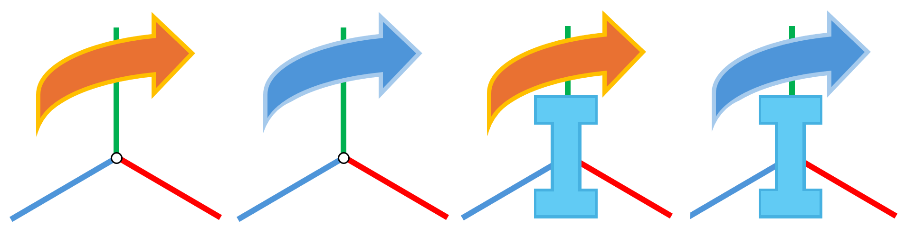

术语表#
本节解释了 NVIDIA Isaac Sim 中使用的术语，并复现了 Omniverse 术语表中定义的若干术语。
Omniverse#
应用程序#
Omniverse 应用程序基于特定的扩展集构建，以提供所需的功能。应用程序通过以自定义布局实现其扩展的用户界面，为用户提供定制化体验。您可以快速轻松地创建由您、Omniverse 社区或 NVIDIA 开发的任意数量扩展组成的定制应用程序。应用程序可以简单如 3D 查看器，也可以复杂如 AI 套件。这种模块化的应用程序构建方式，使得创建定制化工作流或全球规模的云应用程序变得轻松便捷。
应用程序#
Omniverse 应用程序基于特定的扩展集构建，以提供所需的功能。应用程序通过以自定义布局实现其扩展的用户界面，为用户提供定制化体验。您可以快速轻松地创建由您、Omniverse 社区或 NVIDIA 开发的任意数量扩展组成的定制应用程序。应用程序可以简单如 3D 查看器，也可以复杂如 AI 套件。这种模块化的应用程序构建方式，使得创建定制化工作流或全球规模的云应用程序变得轻松便捷。
连接器#
Omniverse 连接器是一种中间件，用于实现 Omniverse 与其他软件应用程序之间的通信。它们支持在不同工具和工作流之间导入/导出 3D 资产、数据和模型。需要注意的是，这意味着使用 USD 作为“中间”格式来转换 3D 数据。
Omniverse Nucleus#
Omniverse Nucleus 提供了一组基础服务，使各种客户端应用程序、渲染器和微服务能够共享和修改虚拟世界的表示形式。
Nucleus 基于发布/订阅模型运行。在访问控制的约束下，Omniverse 客户端可以将对数字资产和虚拟世界的修改发布到 Nucleus 数据库 (DB)，或者订阅这些更改。更改会在已连接的应用程序之间实时传输。数字资产可以包括几何体、灯光、材质、纹理以及描述虚拟世界及其随时间演变的其他数据。
这使得各种支持 Omniverse 的客户端应用程序（Apps、Connectors 等）能够共享和修改虚拟世界的权威表示形式。
请参阅 Nucleus 概述，以更深入地了解 Nucleus 的数据模型、架构和分发平台。
Hub Workstation Cache#
Hub Workstation Cache 是一项有助于加速本地工作站上 USD 工作流的服务。这是一项在本地工作站上运行的独立服务，可惠及基于 Kit 的应用程序或 Client Library 工具。
Hub Workstation Cache 经过性能优化，并支持来自较新版本基于 Kit 的应用程序的存储衍生数据。
有关更多详细信息，请参阅 Hub Workstation Cache 概述。
有关安装方法，请参阅 Workstation 安装。
Live Sync#
Live Sync 模式支持在 Nucleus Server 上对共享文件进行实时“即时”编辑。Live Sync 按钮位于工作区（Workspace）的右上角。
Omniverse Kit#
NVIDIA Omniverse™ Kit 是一个用于构建原生 Omniverse 应用程序和微服务的工具包。它基于一个名为 Carbonite 的基础框架构建，该框架通过一组轻量级插件提供广泛的功能。所有 Carbonite 插件均使用 C 接口编写，以确保持久的 ABI 兼容性。此外，它还提供了一个 Python 解释器，用于脚本编写和自定义。
NVIDIA Omniverse™ Kit 通过 Python 绑定暴露了其大部分功能。这提供了一个 API，可用于为 Omniverse Kit 编写新的扩展，或为 Omniverse 创建新的体验。
如需更深入地了解 Kit 开发，请参阅 Kit 编程手册。
Omniverse Launcher#
NVIDIA Omniverse Launcher 是您进入 Omniverse 的第一步。它提供对 Omniverse 内所有应用、连接器和其他下载内容的即时访问。
有关更多详细信息，请参阅 Launcher 概述。
Omniverse USD Composer#
NVIDIA Omniverse™ USD Composer 是一款用于世界构建的 Omniverse 应用，允许用户组装、照明、模拟和渲染大规模场景。它基于 NVIDIA Omniverse™ Kit 构建。场景描述和内存模型基于 Pixar 的 USD。USD Composer 利用了 USD 的高级工作流，如 Layers、Variants、Instancing 等。
Carbonite (carb)#
Carbonite SDK 提供了所有 Omniverse 应用的核心功能。这是一个基于 C++ 的 SDK，带有 Python 绑定，提供插件管理、输入处理、文件访问、资源加载与管理、线程和任务管理等功能。
RTX - 实时模式#
高质量的实时渲染模式。
RTX – Interactive (Path Tracing) 模式#
最高质量、物理精确的渲染模式。
扩展#
扩展是用于扩展 Omniverse Kit 功能的插件。它们提供完整的源代码，帮助开发人员轻松创建、添加和修改所需的工具和工作流，从而提高工作效率。扩展是基于 Omniverse Kit 的应用程序的核心构建模块。
有关详细信息，请参阅 Extension Manager。
Omniverse Connect#
连接器是位于开源 USD 发行版之上的扩展和附加软件层，使 DCC 工具和计算服务能够通过 Omniverse Nucleus DB 轻松相互通信。这些扩展和附加组件统称为 NVIDIA Omniverse™ Connect。
USD#
USD#
Universal Scene Description (USD) 是一种易于扩展的开源 3D 场景描述文件格式，由 Pixar 开发，用于内容创建以及不同工具之间的数据交换。凭借其强大的功能和通用性，USD 不仅在视觉特效领域得到广泛应用，还在建筑、设计、机器人、制造及其他学科中被广泛采用。
如需深入了解 Omniverse 中的 USD，请参阅 NVIDIA 的 USD 入门指南 什么是 USD？。
有关更多详细信息，请参阅 USD API 文档。
有关更多详细信息，请参阅 USD 术语与概念词汇表。
请参阅 NVIDIA 的 USD 教程
MDL#
Material Definition Language (MDL) 是由 NVIDIA 开发的 USD 架构，用于表示材质分配并指定材质参数。
Stage#
Omniverse Stage 窗口允许您查看当前 USD 场景中的所有资产。USD Stage 是 USD 中用于表示场景图的抽象概念，该场景图源自一个根 USD 文件及其组合的所有引用/分层文件。Stage 以层级（父/子）顺序列出内容，提供便捷的访问方式，通常用于导航大型场景。
有关更多详细信息，请参阅 Stage 文档。
有关更多详细信息，请参阅 USD 术语与概念词汇表。
Prim#
Prim 是 USD 中的主要容器对象：Prim 可以包含（并排序）其他 Prim，从而在 Stage 上创建“命名空间层级结构”，并且 Prim 还可以包含（并排序）持有有意义数据的属性。Prim 及其关联的计算索引是 Stage 在内存中保留的唯一持久化场景图对象，与 Prim 交互的 API 由 UsdPrim 类提供。
有关更多详细信息，请参阅 USD 术语与概念词汇表。
网格#
网格是一种可细分的图元，由定义其形状的顶点、边和面组成。在 USD 中，网格通过 UsdGeomMesh 类进行编码。
形状#
形状是一种几何图元，映射到 USD 的五个“内在” UsdGeomGprim 类之一：
形状不是网格，因为它们不是由顶点、边和面的集合定义的。相反，它们由其形状和体积定义。
Pixar 在其 UsdGeomGprim 架构文档 中描述了这些 prim 的用例。
Reference 与 Payload 与 Instance#

USD 中的所有内容都是带有属性（attributes）的图元（prim）。其中一些图元定义在当前层（活动 stage）中，而另一些则定义在其他层（其他 USD 文件）中。
从其他层包含进来的图元是对该 prim 的 Reference（引用），在 Isaac Sim 的上下文树中，其关联的 Xform 图标上会显示 橙色箭头 作为标识。Reference 旨在保持轻量级，并隐含假设该引用的子 prim 不会被修改。
如果需要在仿真过程中修改 Reference 的内容，则必须将其转换为 Payload（负载）。Payload 在 Isaac Sim 的上下文树中，其关联的 Xform 上会显示 蓝色箭头 作为标识。Payload 是一种 Reference，其所有数据均由仿真器主动加载，以便在运行时进行修改。
Instance（实例）由 蓝色“I” 标识，可以是 Reference 或 Payload。它们对资产结构带有额外的假设，以实现更高效的向量化（放大）。
例如，假设你想用机器人收集合成数据。如果你不打算修改机器人的结构，它可以作为引用存在于舞台上（资产定义在其他文件中）。如果在数据收集期间，你希望能够将机器人替换为另一个机器人，那么这些网格需要保存在活动内存中。这意味着资产首先需要从引用转换为负载。如果你想一次性使用 1000 个相同的机器人收集数据，你可以使用可实例化的引用。而如果你想使用 1000 个随机采样的机器人（例如，具有相同关节数量的不同机械臂）收集数据，你将使用实例负载。
Y-Up / Z-Up#
给定场景/prim 的方向轴。Y-Up 表示正 Y 轴指向上方。Z-Up 表示正 Z 轴指向上方。此方向设置通常由场景/prim 的源应用程序设定。
Layer#
USD 协作特性的一个组成部分。USD 中的每个层代表用户对舞台内资产的“意见”。层可以覆盖其他层。
Instance#
prim 的轻量级且可操作性较低的副本。
Checkpoint#
不可变的历史文件版本。检查点用于版本控制，允许您查看并将阶段恢复到之前的状态。
PhysX#
NVIDIA PhysX 是一种可扩展的多平台物理模拟解决方案。 NVIDIA Omniverse™ 物理模拟扩展由 NVIDIA PhysX SDK 提供支持，包含 刚体模拟、关节体模拟、可变形体模拟和角色控制器。
有关更多详细信息，请参阅 Physics Core。
Isaac Sim#
ROS / ROS 2#
机器人操作系统 (ROS) 是一组软件库和工具，可帮助您构建机器人应用程序。 NVIDIA Isaac Sim 提供了许多扩展、示例和 API，用于连接 ROS 和 ROS 2 工作流。
动态控制#
Dynamic Control 扩展提供了一组用于控制物理对象的实用工具。它为不同的物理对象提供不透明句柄，这些句柄在 PhysX 场景重置之间保持有效，而场景重置会在按下播放或停止按钮时发生。
有关完整的使用示例和 API 详细信息，请参阅 API 文档。
注意
omni.isaac.dynamic_control 已弃用。
核心 API#
重要
Isaac Sim 5.0.0 引入了 Core Experimental API：这是对当前 Core API 的重写实现，旨在更加健壮、灵活和强大，同时保留核心工具和包装器概念。
未来，它将成为所有 Isaac Sim 源代码中使用的基础 API。 当前的 Core API 将在未来的版本中被弃用并移除。
因此，我们强烈鼓励尽早采用并使用 Core Experimental API。
Isaac Sim 中的 Isaac Core 扩展提供了用于 PhysX 和原始 USD API 的高级接口。它抽象了默认参数，以简化模拟世界以及机器人模拟器中常见场景的创建和操作。具体而言，该扩展允许：
轻松创建、操作和管理世界、其所有时间相关事件以及相关的物理和数值参数
创建各种机器人任务和控制器
通过各种 view 类（如
ArticulationView、RigidPrimView、XFormPrimView）对强化学习环境进行向量化操作，这些类分别提供了并行操作关节体集合、刚性图元和 xform 的高级功能。
有关完整的使用示例和 API 详细信息，请参阅 API 文档。
黎曼运动策略 (RMP)#
黎曼运动策略 (RMP) 是一组运动生成工具，构成了 Omniverse Isaac Sim 中大多数机械臂控制的基础。它为机器人创建平滑的轨迹，并具备智能的碰撞避免功能。
有关更多详细信息和示例，请参阅 运动生成 文档。
世界#
World 是核心类，使您能够以简单且模块化的方式与模拟器进行交互。它处理许多与时间相关的事件，例如添加回调、步进物理、重置场景、添加任务等。World 类是一个单例（Singleton），这意味着在运行 Omniverse Isaac Sim 时只能存在一个 World 实例。您可以从不同的扩展中查询 World 以获取有关模拟的信息。
场景#
世界包含一个 Scene 实例，可以将其视为一个场景管理类，用于管理 USD 舞台中感兴趣的资产。它提供了一个简单的 API，用于在舞台中添加、操作和检查不同的 USD 资产，以及设置其默认重置状态。许多可以添加到 Scene 中的对象类通常接受舞台中已存在的 USD prim，或创建一个新的 USD prim，从而提供了一种简单的方式来设置/获取其常用属性。
任务#
isaacsim.core.api 中的 Task 类提供了一种方法来模块化场景创建、信息检索、指标计算，以及使用更复杂的逻辑创建更复杂的场景。
关节体#
关节机器人是具有旋转关节的机器人（例如：足式机器人、机械臂或轮式机器人）。在 NVIDIA Isaac Sim 的 isaacsim.core.api 扩展中，存在一个 Articulation 类，它能够以简单的方式与 USD 阶段中存在的关节结构进行交互。
Replicator#
Replicator 是 NVIDIA Isaac Sim 中用于创建可参数化离线数据集的合成数据生成工具。
有关更多使用信息，请参阅 omni.replicator 扩展文档。
合成数据生成#
NVIDIA Isaac Sim 支持合成数据生成工作流。有关更多详细信息，请参阅 Replicator。
真值数据#
NVIDIA Isaac Sim 可用于生成与真实世界模拟数据高度相似的真值数据。有关更多详细信息，请参阅 Replicator。